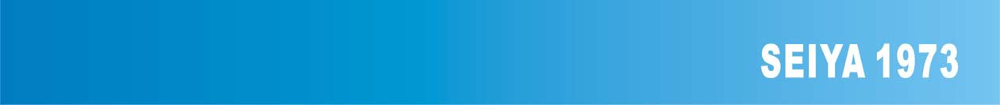
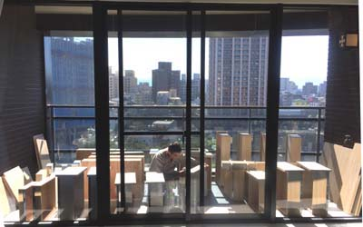
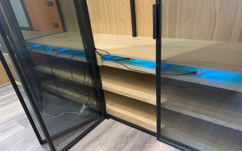

開窗通風
通風對於室內空氣極為重要，而窗戶日常保養常識也需了解。
※窗戶大部份的窗戶都是鋁制品，其表面都是氧劑處理，因此不可使用強酸鹼快速等清潔劑，可以使用沙拉脫比較柔和的清潔劑，窗溝則是最容易藏污納垢之處，也是最難清潔之處，一般簡易清洗法是用水去清洗，但往往其污水會污染到樓下，造成鄰居抱怨，所以基本上是使用半濕式清洗法，先用毛刷將溝槽清刷，再使用吸塵器將灰塵吸起，第二步使用濕布將其溝槽擦拭，等到乾燥後，還會有許多水痕，此時可用乾布擦拭，另外一種清洗法是將窗戶拆下清洗，但往往窗戶很重，有危險的存在性，因此要非常注意安全。
清潔消毒


比較好的玻璃，表面具有較優撥水性，比較不容易有水垢產生，但這些玻璃只局限於少數高級建築物之指定使用，而玻璃輕微的水垢，可用除垢型牙膏沾上微濕的布上予以研磨擦拭，再用清水清洗及可，如嚴重的水垢則要請專業的清潔公司或自行可使用研磨機才將其水垢清除，許多水垢的成份為碳酸鈣，時間越久沒清理，就越難清理，因此最好是每季都清潔一次為佳，另外玻璃也常常貼上一些貼紙，或是颱風原因使用膠帶，未在台風過後撕掉，造成背膠黏在玻璃上，因此可使用除膠劑，此種比較安全的除膠劑可在大賣場買到，不要使用甲苯等有刺激較高毒性的溶液為佳，市面如3M的Natural Cleaner強力天然清潔劑(雖號稱天然，但還是有化學溶劑)是不錯除膠的選擇之一，但使用時還是需帶活性碳口罩為佳。
